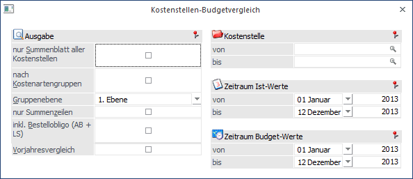
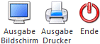
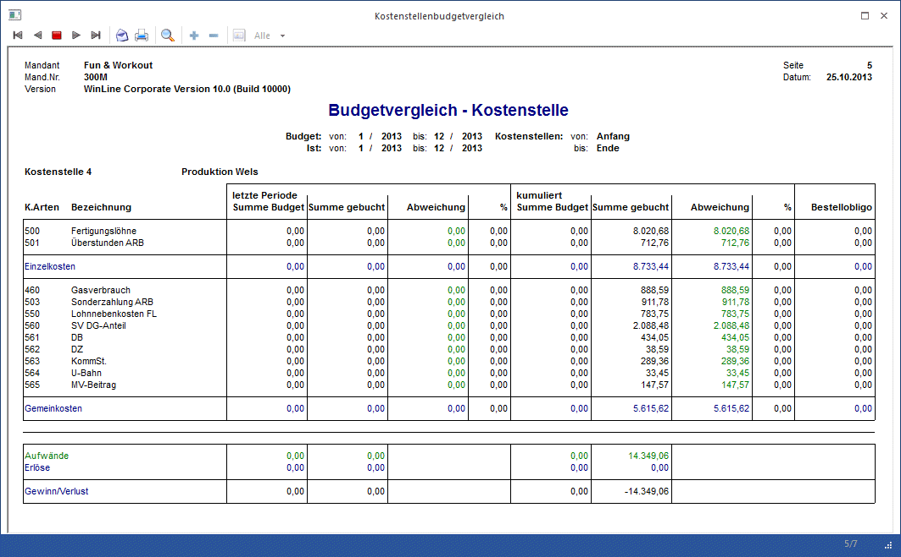
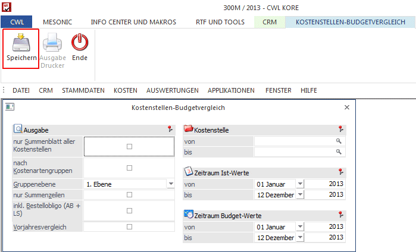

Um einen Kostenstellen-Budgetvergleich durchzuführen, rufen Sie den Menüpunkt
1 Auswertungen
1 Kostenstellen-Budgetvergleich
auf.
In dieser Auswertung werden für den selektierten Bereich der Kostenstellen für jede gebuchte Kostenart die IST-Kosten den budgetierten Kosten gegenübergestellt und die daraus resultierende Abweichung (absolut und in Prozent) berechnet und ausgewiesen.
Die Kostenarten werden - sofern nicht nach Kostenartengruppen sortiert ausgegeben wird (siehe unten) nach Einzel- und Gemeinkosten getrennt angedruckt und summiert. Im Fußteil der Auswertung werden die gesamten Kosten mit den gesamten Erlösen saldiert und der Gewinn oder Verlust pro Kostenstelle errechnet.
Die Auswertung zeigt die ausgewählte Periode (bzw. "bis-Periode") sowie den kumulierten Wert der ausgewählten Perioden. Wurde also z.B. von Periode 1 bis 6 gewählt, steht in der Periodenspalte die Periode "6" - und unter "kumuliert" die Summe von "1 bis 6".

Ausgabe
Ø Nur Summenblatt
Ist diese Option aktiviert, wird über den eingegrenzten Kostenstellenbereich ein Summenblatt ausgegeben.
Ø Nach Kostenartengruppe
Ist diese Option aktiviert, kann eine Ebene (von 9 möglichen) gewählt werden.
Ø Gruppenebene
Ist die Eben, nach der die Gruppensummen gebildet und angezeigt werden sollen. Die Ausgabe wird automatisch auch nach den Kostenartengruppen SORTIERT - d.h. nicht mehr getrennt in Einzel/Gemeinkosten, sondern nach den Gruppenebenen aufgebaut und dargestellt.
Ø Nur Summenzeilen
Wird nach Kostenartengruppe Summiert ausgegeben, können die Kostenarten-Einzelzeilen optional unterdrückt werden, d.h. es werden nur mehr die Gruppensummen in der Auswertung angezeigt.
Ø Inkl. Bestellobligo (AB + LS)
Das Bestellobligo errechnet sich aus allen offenen Aufträgen bzw. Bestellungen sowie offenen Lieferscheinen, die noch nicht fakturiert wurden (sonst wären es ja schon IST-Kosten). Ist die Option aktiviert, wird das Bestellobligo live aus den Belegen der WinLine FAKT errechnet und angedruckt.
Kostenstelle
Ø von - bis
Wird die Eingabe mit ENTER (ohne Eintrag) übergangen, werden automatisch alle Kostenstellen in die Auswertung einbezogen. Wenn der Bereich durch die Eingabe einer Kostenstellennummer eingegrenzt wird, werden nur die Daten ausgewertet, die sich innerhalb der Selektion befinden. Außerdem wird geprüft, ob der Benutzer die Berechtigung hat (WinLine KORE/Stammdaten/Kostenstellen), die eingegebene Kostenstelle zu verwenden.
Zeitraum Ist-Werte
Ø von - bis
Selektieren Sie die Periode und das Jahr für die Ist-Werte, die Sie auswerten möchten (Periode 01 bis 12 oder das gesamte Wirtschaftsjahr).
Zeitraum Budget-Werte
Ø von - bis
Selektieren Sie die Periode und das Jahr für die Budget-Werte, die Sie auswerten möchten (Periode 01 bis 12 oder das gesamte Wirtschaftsjahr).
Buttons

Ø Ausgabe Bildschirm/Drucker
Die Auswertung kann entweder über den Drucker oder den Bildschirm erfolgen.
Ø Ende
Das Fenster wird geschlossen.

Besonderheiten beim Aufruf dieses Fenster aus dem Menüpunkt "Reportdefinition"

Ø Periode
In der Auswahllistbox steht auch der Eintrag "aktuelle Periode" zur Verfügung. Falls dieser Eintrag gewählt wurde, wird bei der Vorschau des Reports bzw. beim Erzeugen des Reports die Periode mit der Periode des aktuellen Systemdatums belegt.
Ø Speichern
In der Reportdefinition kann die Auswertung des Kostenstellen-Budgetvergleichs nur gespeichert werden.